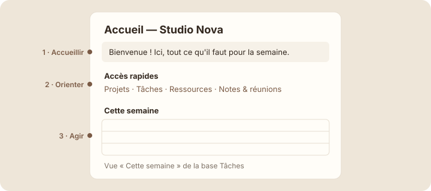

Une page d'accueil simple
À la fin de cette leçon, tu sauras construire une page d'accueil qui oriente l'équipe en quelques secondes, avec une vue liée de la base des tâches.
Étape 1 : comprendre
La page d'accueil est la première chose que voit l'équipe le matin. Elle n'a pas besoin d'être belle ou longue : elle doit répondre en dix secondes à trois questions.
- Où suis-je ? Un mot d'accueil d'une ligne, dans un encadré.
- Où aller ? Des accès rapides vers les grandes parties de l'espace : Projets, Tâches, Ressources, Notes & réunions.
- Que faire aujourd'hui ? Les tâches de la semaine, affichées directement.
Pour la troisième partie, pas question de recopier les tâches : on insère une vue liée de la base « Tâches » (Linked view). C'est une fenêtre sur la base, affichée dans une autre page. Tu tapes « /vue liée » (ou « /linked »), tu choisis la base « Tâches », puis tu filtres sur les tâches de la semaine. Une tâche cochée dans l'accueil est cochée dans la base, puisque c'est la même.

Une vue liée affiche une base existante dans une autre page, sans rien copier.
Attention : une page d'accueil qui grossit sans fin perd son rôle. Si tu as envie d'y ajouter un long texte, crée plutôt une page dans « Ressources » et mets un lien vers elle.
Le nouvel accueil de Studio Nova
Voici la nouvelle page d'accueil de Studio Nova. Coche une tâche : dans le vrai Notion, elle serait aussi cochée dans la base « Tâches ».
Accueil — Studio Nova
Accès rapides
Projets · Tâches · Ressources · Notes & réunions
Cette semaine
Trois zones, aucune information recopiée. Les accès rapides sont des liens, les tâches une vue de la base. Si Lucas ajoute une tâche pour cette semaine dans « Tâches », elle apparaît ici toute seule.
Refaire ta page d'accueil
- Ouvre « Accueil — Studio Nova ». Supprime l'ancienne checklist « Cette semaine » du module 2 : les tâches vivent maintenant dans la base.
- En haut, transforme ta phrase d'accueil en encadré (poignée ⋮⋮, puis « Transformer en » et « Encadré »).
- Sous le titre 2 « Liens utiles », renomme-le « Accès rapides » et vérifie les quatre liens : Projets, Tâches, Ressources, Notes & réunions (« @ » pour ceux qui manquent).
- En dessous, ajoute un titre 2 « Cette semaine ». Tape « /vue liée » (/linked view) et choisis la base « Tâches ».
Capture d'écran Notion Insérer une vue liée · images/captures/m06-vue-liee.png
- Dans la vue liée, choisis la mise en page Liste ou Tableau, puis ajoute un filtre sur l'Échéance : « Cette semaine ».
Capture d'écran Notion Accueil terminé · images/captures/m06-accueil-final.png
Astuce : une vue liée a ses propres filtres : celle de l'accueil peut montrer « cette semaine » pendant que la base complète montre tout. Le filtre de l'une ne touche pas l'autre.
Exercice · dans Notion
Un accueil en trois zones
- Un encadré d'accueil d'une ou deux lignes.
- Une section « Accès rapides » avec quatre liens.
- Une section « Cette semaine » avec une vue liée de la base « Tâches », filtrée.
Résultat attendu : en ouvrant l'accueil, tu vois en un écran où tu es, où aller et quoi faire. En cochant une tâche ici, puis en ouvrant la base « Tâches », tu la retrouves cochée.
Étape 4 : vérifier
À retenir
- Une page d'accueil répond à trois questions : où suis-je, où aller, que faire ?
- Une vue liée affiche une base dans une autre page, sans rien copier.
- L'accueil reste court : les longs contenus vont dans leur propre page.
Choisis une réponse avant de valider.
La vue liée affiche les vraies tâches, toujours à jour, sans les dupliquer.
Choisis une réponse avant de valider.
L'accueil oriente ; les contenus longs vivent dans leur propre page.